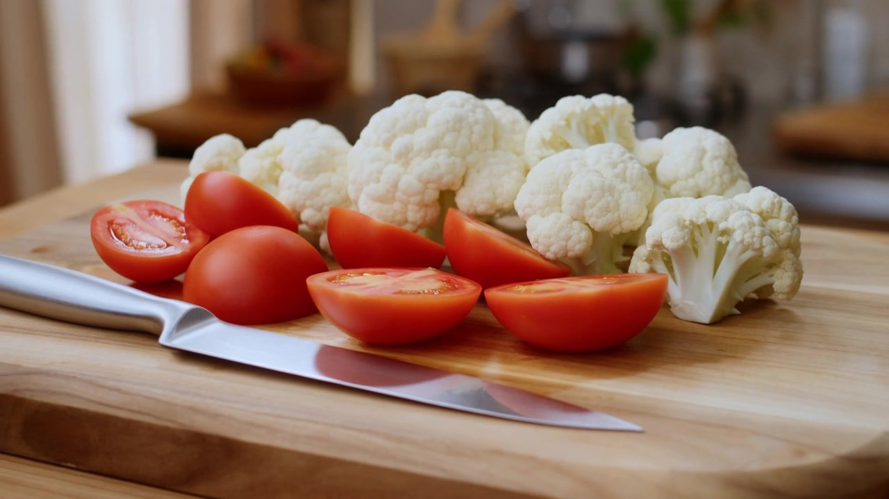
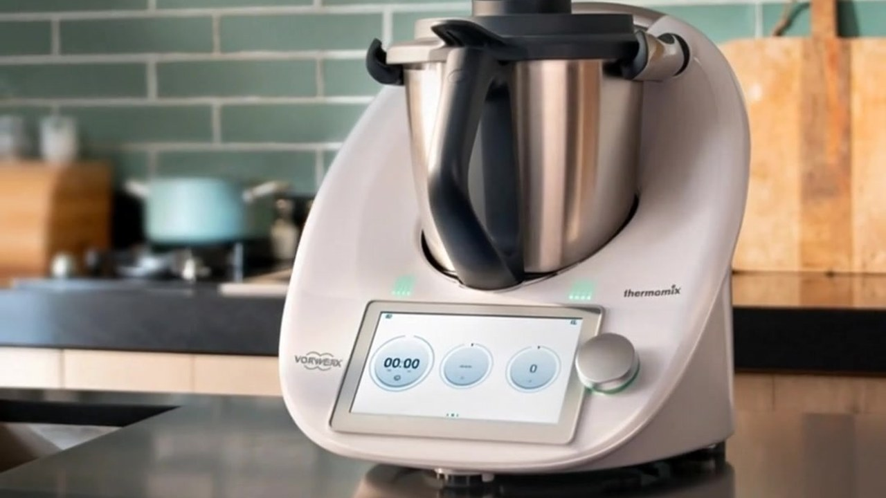
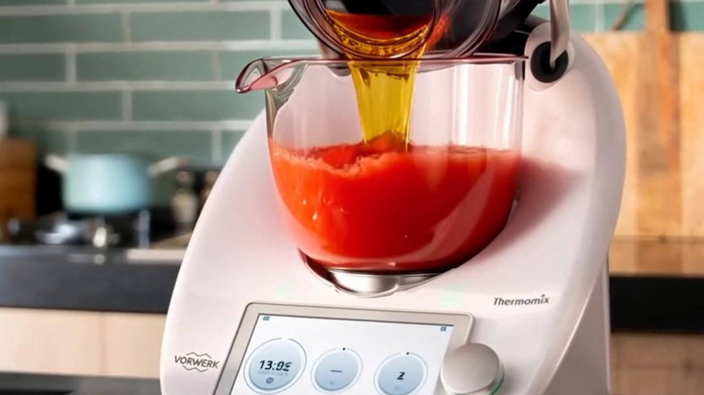
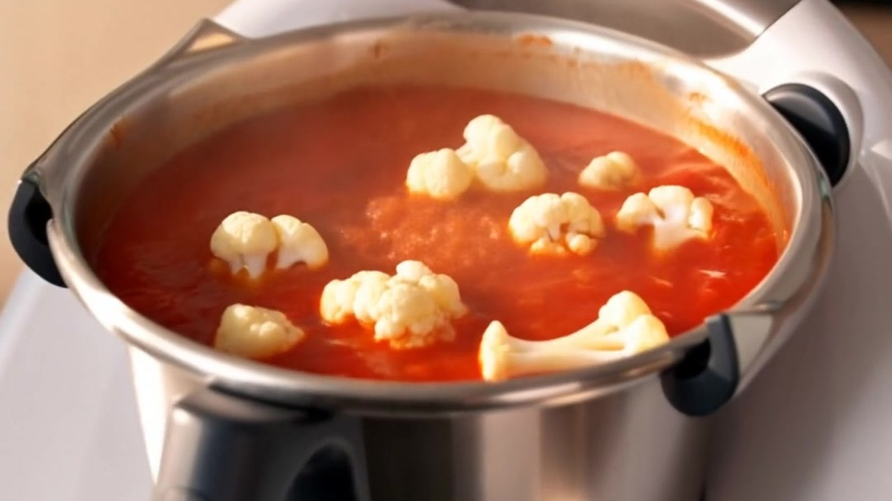
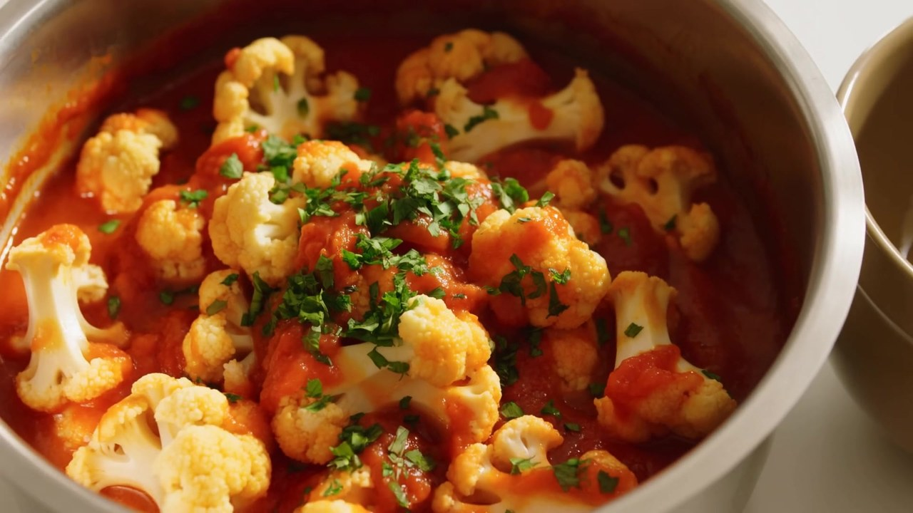

Use ripe tomatoes. Peel them first so the sauce stays smooth.
Meditation · Cooking Meditation

Tomato Cauliflower
Easily stored 🥡
Freezable ❄️
Reheatable 🔥
Simple, healthy, and a quiet cooking practice. Cooked in the Thermomix.
Shopping list
Check off what you already have. Amounts are for 2–3 servings.
Fruit & veg
Sauces & seasonings
Step 1
Peel the tomatoes and cut them in half. Wash the cauliflower and cut it into even florets.

🍅3Ripe tomatoes
🥦400gCauliflower
Step 2
Put the tomatoes in the Thermomix. Blend at speed 6 for 5 seconds. Add 18g oil. Cook 2 minutes at 120°, reverse, spoon speed.


🍅3Ripe tomatoes
🟡18gVegetable oil
Step 3
Add the cauliflower, 5g salt, and 8g soy sauce. Cook 8 minutes at 120°, reverse speed 1.

🥦400gCauliflower
⚪5gSalt
🟤8gLight soy sauce
Step 4
Taste, then plate. Sweet, tangy, and light.

Cut the cauliflower into even florets so they cook at the same pace.
Keep reverse on in the Thermomix so the florets stay whole.
How to store it
Cool completely. Keep in an airtight container in the fridge for up to 3 days.
How to freeze it
Freeze in portions for up to 1 month. Cauliflower will be a little softer after thawing.
How to reheat it
From fridge: warm in the Thermomix or a pan until piping hot. From freezer: thaw in the fridge first, then reheat the same way. Stir gently.
Nutritional information per serving (based on 2 servings). Approximate.
Calories170 kcal
Protein5 g
| Fat | 9g |
| Saturated fat | 1g |
| Carbohydrates | 18g |
| Sugars | 9g |
| Dietary fibre | 6g |
| Sodium | 480mg |